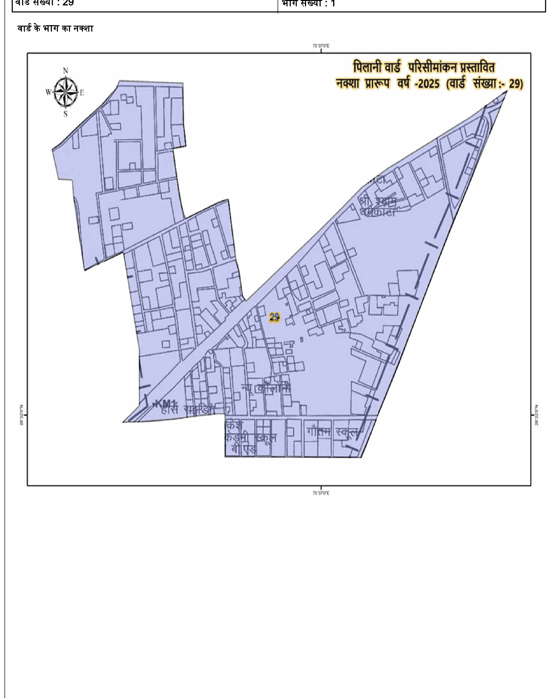

Rajasthan State Election Commission
Ward 29 — Pilani
नगर पालिका निर्वाचन नामावली • 2026 (विधानसभा: 25-पिलानी)
मतदाता संरचना (Voter Composition)
901
Total Voters
पुरुष (Male)
463
51.4%
महिला (Female)
438
48.6%
तृतीय लिंग
0
0%
463
पुरुष मतदाता
Male Voters
438
महिला मतदाता
Female Voters
901
कुल मतदाता
Total Voters
29
वार्ड संख्या
Ward Number
निर्वाचन विवरण (Election Metadata)
विधानसभा क्षेत्र
25 - पिलानी (Pilani)
तहसील / जिला
पिलानी, झुन्झुनू
पुनरीक्षण वर्ष
2026 (विशेष संक्षिप्त)
प्रकाशन दिनांक
08-05-2026 (अर्हता 01-01)
मानचित्र
वार्ड 29 का सीमा नक्शा (Ward Map)
आधिकारिक PDF पृष्ठ 2 से निष्कर्षित आधिकारिक सीमा मानचित्र

मतदान केंद्र
मतदान केंद्र विवरण (Polling Station)
वार्ड 29 के मतदाताओं हेतु निर्धारित मतदान स्थल
मतदान केंद्र संख्या: 29
29 — गौतम सेकण्डरी स्कूल, पिलानी
वार्ड संख्या 29, पिलानी, झुन्झुनू, राजस्थान (गौतम सेकण्डरी स्कूल भवन, कमरा नं 1)
भौगोलिक सीमाएं
वार्ड सीमा एवं प्रमुख स्थल (Boundaries)
वार्ड 29 का आधिकारिक परिसीमन विवरण
प्रमुख स्थल एवं मार्ग (Key Landmarks)
🏫 गौतम सेकण्डरी स्कूल
⭕ सी.एल.आर. सर्किल
🛣️ लोहारू रोड़
🎓 इंद्रमणि मण्डेलिया कॉलेज, पिलानी
🚰 जलदाय विभाग पंप
🏘️ गली नं. 02
🎖️ शहीद महेंद्र सिंह गोदारा मकान
🏭 पेठा फैक्ट्री
🛣️ राजपुरा रोड़
रतन चाप वाले की दुकान के पीछे से पूर्व की तरफ बांये हाथ की आबादी को शामिल कर राकेश स्कूल की पुरानी बिल्डिंग को छोड़ते हुए दक्षिण में मुड़कर बांये हाथ की आबादी को शामिल करते हुए पूर्व में मुड़कर राकेश स्कूल की नई बिल्डिंग को छोड़ते हुए गौतम स्कूल को शामिल कर सीधे बाईपास रोड़ पर आकर उत्तर में मुड़कर सीधे उत्तर दिशा में सी.एल.आर. सर्किल पर आकर पश्चिम दिशा में लोहारू रोड़ पर चलते हुए बांये हाथ की आबादी को शामिल कर, इंद्रमणि मण्डेलिया कॉलेज, पिलानी के दक्षिण पूर्व कोने से पूर्व में एवं पश्चिम में जाने वाली दीवार के सहारे बांये हाथ की आबादी को शामिल करते हुए लोहारू रोड़ तक जलदाय विभाग पंप तक वहां से रास्ते-रास्ते बांये हाथ की आबादी को शामिल करते हुए लोहारू तक व गली नं. 02 में दोनो तरफ के मकानों को शामिल करते हुए रामनिवास सोलंकी एवं शहीद महेंद्र सिंह गोदारा के मकान को शामिल करते हुए गली नं- 02 के अन्त तक, आमने-सामने के मकानों को शामिल करते हुए, विक्रम सिंह ओजटू के मकान को छोड़ते हुए पेठा फैक्ट्री को शामिल करते हुए उमराव सिंह के मकान होते हुए राजपुरा रोड़ से पथरिया वाले कच्चे रास्ते-रास्ते इंद्रमणि मण्डेलिया कॉलेज, पिलानी के दक्षिण पूर्व कोने तक।
मतदाता खोज
मतदाता सूची (Voter Directory)
नाम (हिंदी/English), Voter ID (EPIC), पिता/पति का नाम या मकान संख्या से तुरंत खोजें
| क्र.सं. | Voter ID (EPIC) | मतदाता का नाम (Hindi / English) | पिता / पति का नाम | मकान सं. | आयु | लिंग | फोटो |
|---|
दिखाए जा रहे हैं 1–30 (कुल 901)
स्रोत दस्तावेज
मूल निर्वाचन दस्तावेज (Original Source PDF)
राज्य निर्वाचन आयोग राजस्थान द्वारा जारी 39-पृष्ठीय आधिकारिक दस्तावेज़
WardNo29.pdf
39 Pages • Official Electoral Roll • 2026